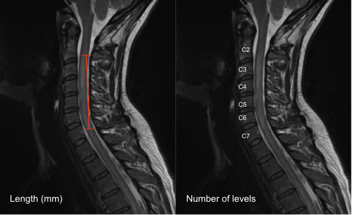

Gaillard F, Sharma R, Alwalid O, et al. Longitudinally extensive spinal cord lesion. Reference article, Radiopaedia.org (Accessed on 20 Dec 2025) https://doi.org/10.53347/rID-26463
1) Description of Measurement
Intramedullary T2 hyperintensity length quantifies the longitudinal extent of increased T2 signal within the cervical spinal cord, reflecting edema, demyelination, ischemia, gliosis, or myelomalacia.
In the setting of cervical spondylotic disease, this finding is most commonly associated with degenerative cervical myelopathy (DCM) and correlates with disease severity, chronicity, and neurologic outcomes. The length of T2 signal abnormality provides prognostic information beyond static measures of compression alone.
2) Instructions to Measure
Option A: Linear Measurement (mm)
Option B: Vertebral Level Count
3) Normal vs. Pathologic Ranges
Key points:
4) Important References
Takao T, Morishita Y, Okada S, et al. Clinical relationship between cervical spinal canal stenosis and traumatic cervical spinal cord injury without major fracture or dislocation. Eur Spine J. 2013 Oct;22(10):2228-31. doi: 10.1007/s00586-013-2865-7. Epub 2013 Jun 23.
Tetreault L, Palubiski LM, Kryshtalskyj M, Idler RK, Martin AR, Ganau M, Wilson JR, Kotter M, Fehlings MG. Significant Predictors of Outcome Following Surgery for the Treatment of Degenerative Cervical Myelopathy: A Systematic Review of the Literature. Neurosurg Clin N Am. 2018 Jan;29(1):115-127.e35. doi: 10.1016/j.nec.2017.09.020.
Badhiwala JH, Wilson JR, Fehlings MG. Global burden of traumatic brain and spinal cord injury. Lancet Neurol. 2019 Jan;18(1):24-25. doi: 10.1016/S1474-4422(18)30444-7. Epub 2018 Nov 26.
Yukawa Y, Kato F, Yoshihara H, Yanase M, Ito K. MR T2 image classification in cervical compression myelopathy: predictor of surgical outcomes. Spine (Phila Pa 1976). 2007 Jul 1;32(15):1675-8; discussion 1679. doi: 10.1097/BRS.0b013e318074d62e.
5) Other info....
T2 hyperintensity represents a spectrum of pathology:
Should be interpreted in conjunction with:
The presence of T1 hypointensity in addition to T2 hyperintensity suggests irreversible cord injury and poorer prognosis
Absence of T2 signal change does not exclude clinically significant myelopathy
Dynamic factors and duration of symptoms strongly influence outcomes and should be considered alongside imaging